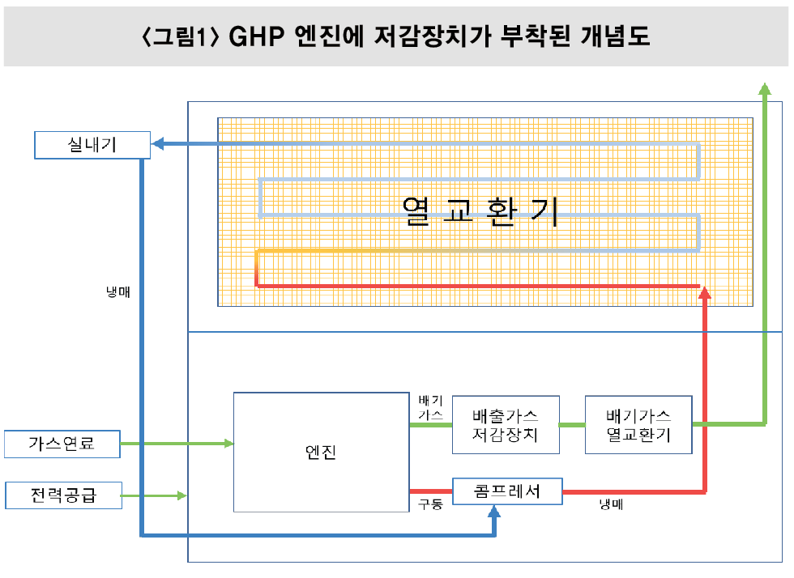
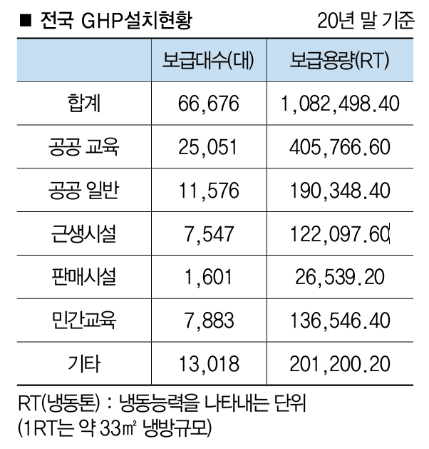

GHP(Gas HEat Pump)의 약자로 도시가스를 에너지자원으로 하여 가스엔진으로 압축기를 구동하는 가스 냉난방 시스템니다. 즉, 압축기에 의해 냉매를 실내기와 실외기 사이에 냉매관으로 흐르게 하여 액화와 기화를 반복시켜 여름에는 냉방으로, 겨울에는 난방으로 사용하는 시스템이다.
국내에서 GHP를 제조·판매하는 기업은 삼천리ES, 삼성전자, LG전자 등 3곳이다. 이들 기업 가운데 삼천리ES는 일본 얀마사의 제품을 수입해 판매·시공하고 있고, 삼성전자는 실내기는 자사가 만드는 대신 실외기는 일본 아이신의 제품으로 하고 있다. LG전자는 실내기와 실외기 모두를 직접 제조하는 유일한 기업이다.
GHP산업에서 산업부, 환경부의 환경 규제 강화로 인하여 저감장치 정부사업이 시작되었으며, 22년까지는 산업부 23년부터는 환경부 규제의 인증상품만 판매할 수 있는 상황이 되었다.
위의 내용 중 본인은 GHP 내 lean burn Engine을 이론공연비(14.7:1)의 특성으로 운전가능하게하는 저감장치 중 GVM(가스제어모듈)을 제어할 수 있는 ECU, O2 Sensor 등으로 구성 된 Kit를 개발하여 Emission 규제를 만족시켜 환경인증품으로 납품하기 시작하였다. 주요3사 중 2개사에 납품 중으로 양산 GHP에 Kit가 부착되어 판매 중이다.
위의 사진과 같이 현행되는 환경부 규제에 만족하지 못하는 이전에 설치되어 있는 GHP에 대한 Retrofit사업 또한 시작되어 개발 중에 있으며, 향후 수년간 여러 회사들의 활발한 사업활동과 향후 양산품에 대한 사업방향도 많은 변동들이 있을 것 으로 보인다.